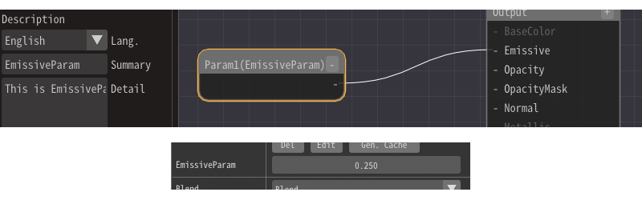
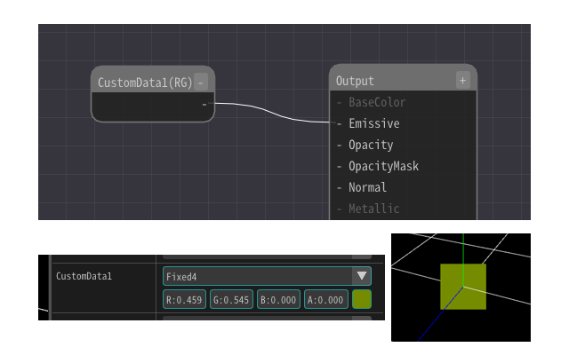

Material Node(Constant)¶
Overview¶
Node list¶
Constant1,2,3,4¶
Outputs the value specified in the property.
Parameter1,2,3,4¶
Outputs externally specified parameters. This parameter is common for each node. The summary and details specified in the parameters are displayed in Effekseer and external tools.
The parameters can be specified from Basic Render Settings in Effekseer.
By right-clicking on the Effekseer input field and pressing Reset, you can enter the value specified in the Mateiral.
CustomData1, CustomData2¶
Outputs externally specified parameters. This parameter can be set differently for each particle. The summary and details specified in the parameters are displayed in Effekseer and external tools.
The parameters can be specified from Basic Render Settings in Effekseer. For example, you can enter random or F-curve values to achieve more complex materials.
By right-clicking on the Effekseer input field and pressing Reset, you can enter the value specified in the Mateiral.
Time¶
Outputs the current time in seconds.
LocalTime¶
Outputs the time in seconds since the effect was generated.
CameraPosition¶
Outputs the camera position.
EffectScale¶
Gets the scale specified when the effect file is loaded